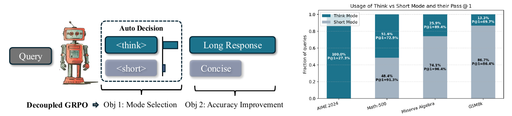
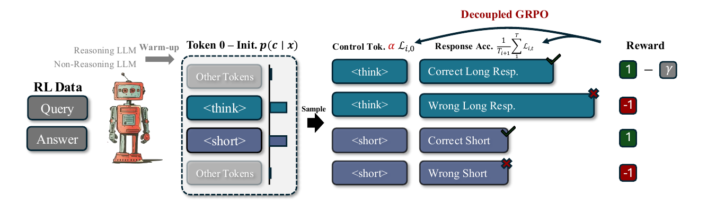
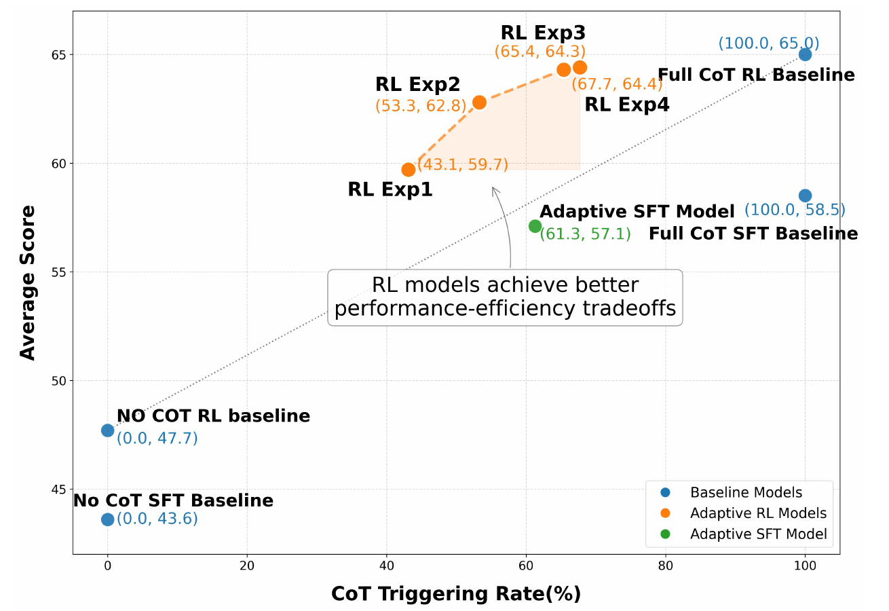
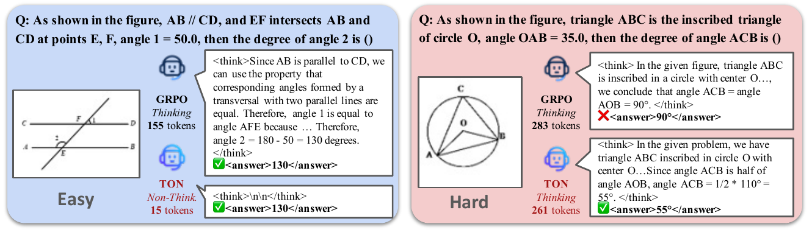
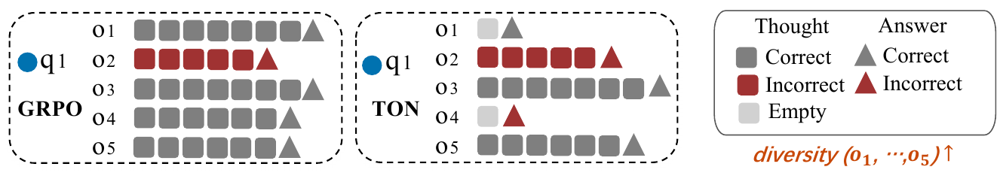
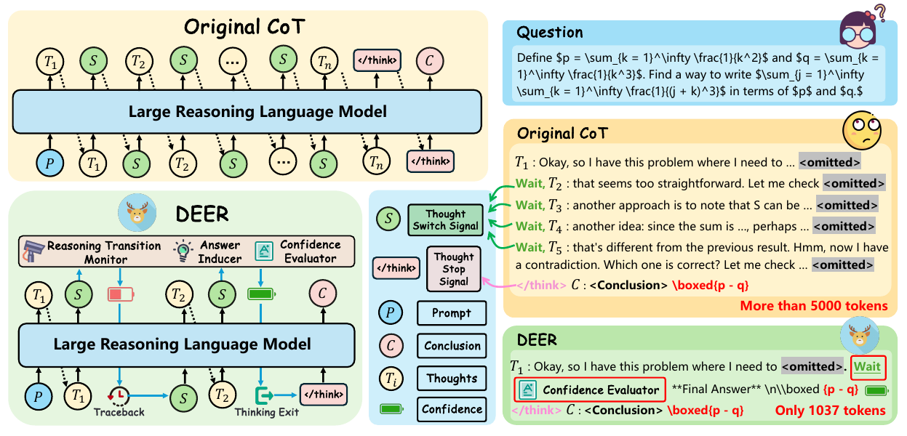
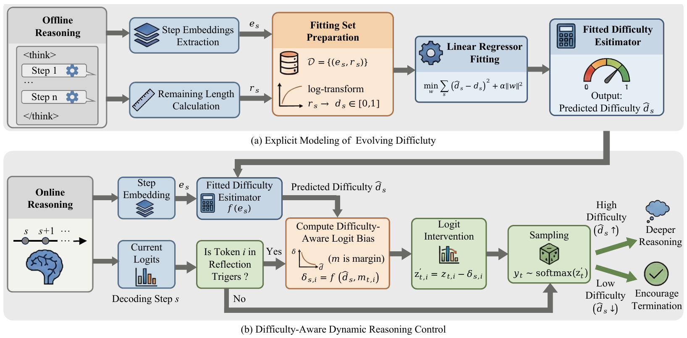

动态推理根据当前问题、推理进度或执行反馈调整计算。 常见控制包括：生成前选模式、生成中决定停止、收到反馈后重新分配预算。
Thinkless
Thinkless 把模式选择放在首个控制 token 上。后续文本以该标记为条件生成。

输入 x，模式 m，回答 y=(y1,…,yK)，共享参数 θ：
πθ(m,y∣x)πθ(y∣x,m)=πθ(m∣x)πθ(y∣x,m),=k=1∏Kπθ(yk∣x,m,y<k).
Cold Start and Reward

冷启动保证两种模式可用，RL 学习何时选择。原图中的长模式成本 γ 在下式记为 κ，0<κ<1：
Ri=⎩⎨⎧1,1−κ,−1,短模式且正确,长模式且正确,错误.
同一输入采样 G 条，i 为样本编号。该版本使用中心化优势，不除以标准差：
Ai=Ri−G1h=1∑GRh.
只比较两种模式，平分时选短模式。设正确概率为 ps,pl，由上述奖励直接得到：
UsUlm⋆=long=2ps−1,=(2−κ)pl−1,⟺(2−κ)pl>2ps.
这是期望回报分析；训练中用采样奖励学习，部署时无需知道真实正确概率。
Separate the Control Token
模式 token 只有一个，回答可能很长。DeGRPO 将两部分分开归一化：
ρi,kF(ρ,A)=πθold(yi,k∣ci,k)πθ(yi,k∣ci,k),=min[ρA,clip(ρ,1−ϵ,1+ϵ)A].
k=0 为模式 token；ci,k 为采样前缀。新旧策略评价同一个采样 token，ϵ 为裁剪宽度。
MiTiJDeGRPO=αF(ρi,0,Ai),=Ki1k=1∑KiF(ρi,k,Ai),=G1i=1∑G(Mi+Ti−βDi).
α 固定模式项的相对权重；Di 是参考策略 KL 项，β 为其系数。KL 参考策略与产生样本的 old policy 分别登记。Thinkless，式 (1)–(4)
AdaCoT
AdaCoT 用辅助模型标注 CoT 必要性，再依次进行 SFT、RL-Math 和 RL-General；两个 RL 阶段均使用 PPO。

原图比较 15 个文本基准上的平均分与 CoT 触发率，橙色点对应不同 RL 惩罚设置。
通用阶段在质量奖励上加入三类惩罚。将原文系数统一记为非负的 λ：
RiAda=Rbase,i−λmissPmiss,i−λoverPover,i−λfmtPfmt,i.
Pmiss,Pover,Pfmt 分别标记漏触发、过触发和格式错误。AdaCoT，式 (4)
RL-Math 的数据容易把模式推向始终思考。SLM 将 think 标记后首个 token 作为决策位置 kidec，暂时屏蔽其直接策略损失：
wi,kLSLM={0,1,k=kidec,其余位置,=i∑k∑wi,kℓi,k.
ℓi,k 为单 token 策略损失。共享参数仍会更新，所以 mask 不保证触发概率完全冻结。AdaCoT，式 (5)、§3.1
Thinkless 单独加权模式项，AdaCoT 在偏置阶段屏蔽该项，分别处理两种训练失衡。AdaCoT 的必要性标注也属于额外监督，应与只使用任务终局回报的设置区分。
Think or Not? (TON)

TON 的 SFT 保留答案，随机将思考替换为空段，再通过 GRPO 学习选择。

GRPO 按格式和任务结果打分，组内优势除以标准差，主方法没有额外长度收费。同样正确的长短输出可以同分，效率收益需实测。TON §4、附录 B
DEER

在推理转折点生成试答，置信度足够时提前结束，否则继续思考。实验固定主模型，比较答案准确率、生成长度与压缩率；试答和分支开销需计入机器人迁移的成本。DEER §3–4
DyCon

离线提取步骤表征，以剩余推理长度构造难度标签并拟合线性估计器；在线按预测难度调整反思词 logits。主模型冻结，估计器在约 600 条 MATH 训练问题上拟合后跨任务评测。DyCon §3–4
Robot-Use: Migration Design
下面给出迁移实验设计。先共享一个已具备闭环控臂能力的 SFT 底座，冻结动作模型，只训练预算选择器与价值头，隔离调度的作用。
1. Sample a Budget
ct 为当前图像、本体状态和历史；mt 为预算档位。θ0 冻结，ϕ 训练：
mtytρt∼qϕ(⋅∣ct),∼pθ0(⋅∣ct,mt),=qϕold(mt∣ct)qϕ(mt∣ct).
模型生成完整动作 JSON 后执行；新图像和实际反馈进入下一轮。思考上限与动作输出上限分开，避免预算耗尽截断 JSON。
2. Assign Outcome and Cost
完整成功为 S(τ)∈{0,1}，总计算为 C(τ)，共用有限上限为 Cmax。ΔCt 计入本轮 prefill、路由、生成及试答，η 为成本权重：
R(τ)rt=S(τ)−ηCmaxC(τ),=−ηCmaxΔCt+1[t=H]S(τ).
H 为回合轮数，C(τ)=∑tΔCt。每份成本只计一次，∑trt=R(τ)。
3. Estimate Advantages
有限回合取折扣为 1，价值函数 Vψ 预测剩余回报：
δtAtGt=rt+(1−dt)Vψold(ct+1)−Vψold(ct),=δt+λGAE(1−dt)At+1,=At+Vψold(ct).
dt 标记真实终止。训练分块需 bootstrap；At,Gt 在更新时停止梯度。
4. Update and Collect Again
JgateLPPO=EtF(ρt,At),=−Jgate+cVEt[(Vψ(ct)−Gt)2].
cV 为价值损失权重。有限轮更新后刷新采样快照，收集新数据。PPO；GAE
Experimental Protocol
先导采用 LIBERO-Long 的三类任务：碗入抽屉并关闭、杯子入微波炉并关闭、双物体入篮。以下流程与参数为拟议设置。
- E0 · 接口：重放开发演示，核对观测时序、坐标系与成功判定。
- E1 · 冷启动：相同动作标签派生长短说明，确认两种模式都能执行。
- E2 · PPO 探针：核对旧概率、奖励、GAE 与更新后的数值。
- E3 · 对照训练：固定采样预算，在开发集选配置。
- E4 · 测试：冻结模型与超参，分别测试正常任务和预定义扰动。
Shared Settings
按原轨迹和初态划分数据，长短说明共用 split；固定底座、坐标系、控制器和成功判定。
先导的思考上限为 Bs,Bl，动作输出上限为 Ba：
(Bs,Bl,Ba)(ϵ,λGAE)nepoch=(64,256,128),=(0.2,0.95),=2.
这些是开发候选值，nepoch 为每批更新轮数。E2 先用每批 4 回合、10 次更新核对链路；正式采样量按实测成本确定。成本权重先取 η=0，再在开发集比较 0.05／0.1。
每个训练种子测试三项任务的十个初态，三次独立训练对应：
Neval=3×10×3=90.
固定策略使用相同底座、初态和对应评测种子。测试前冻结配置，额外采样和训练 GPU 时单列。
Budget and Loss Ablations
- 固定短／固定长：检验统一预算的质量与成本。
- 随机预算：开发集匹配平均算量，测试报告实际偏差。
- 置信度／难度规则：以 DEER、DyCon 的控制思路作迁移对照。
- 有反馈／无反馈 PPO：相同路由器仅改变执行反馈输入。
联合语言策略阶段固定输出格式与决策位置，再比较普通平均、DeGRPO 风格加权和 AdaCoT 风格阶段 mask，保持数据、奖励与训练预算一致。这里迁移的是损失处理，并非完整复现原算法；SLM 不用于只训练独立路由器的先导阶段。
Measurements and Decision Gates
PsuccessCper success=Neval1i∑Si,=∑iSi∑iCi.
Neval 为评测回合数；成功数为 0 时不报告虚假的有限成本。
质量：正常任务与扰动任务分别报告完整成功率和区间，记录干预未触发的比例。
成本：记录动作前 p50／p95、整回合耗时与全部重试；试答和估计器开销计入。
判据：更新前核对概率比接近 1，再扩大训练；通过随机预算、移除反馈和零成本权重定位收益来源。
按任务和初态处理重复测量，开发集选 checkpoint。若固定短预算或随机分配达到同等结果，复杂选择器的必要性缺乏支持。
References
Image Credits
- Thinkless：Fang、Ma、Wang，v2，Figures 1、2。
- TON：Wang 等，v3，Figures 1、3。
- DEER：Yang 等，v3，Figure 3。
- DyCon：Tu 等，v2，Figure 3。
以上原图按 CC BY 4.0 使用，仅截取图示区域。AdaCoT v2 Figure 1 归 Lou 等作者所有，来源为论文原文。逐项版本、来源和图片记录见图源。